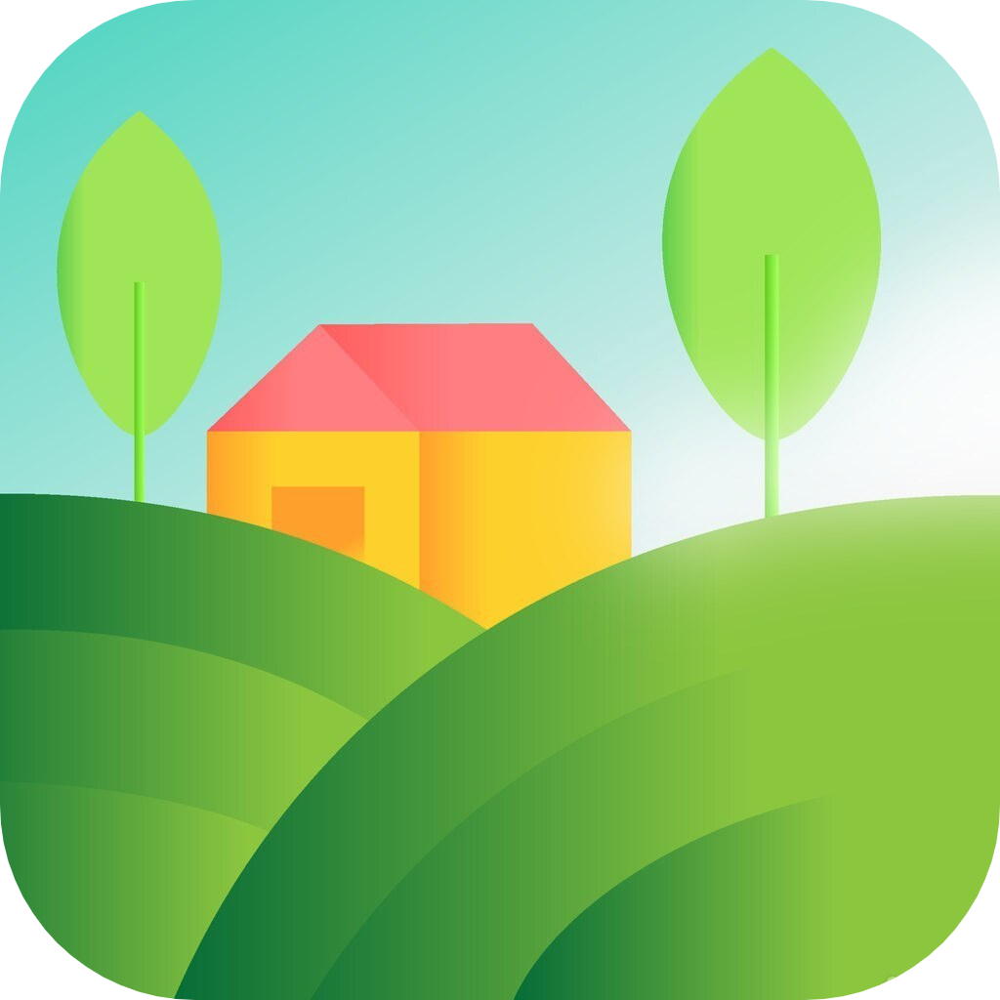
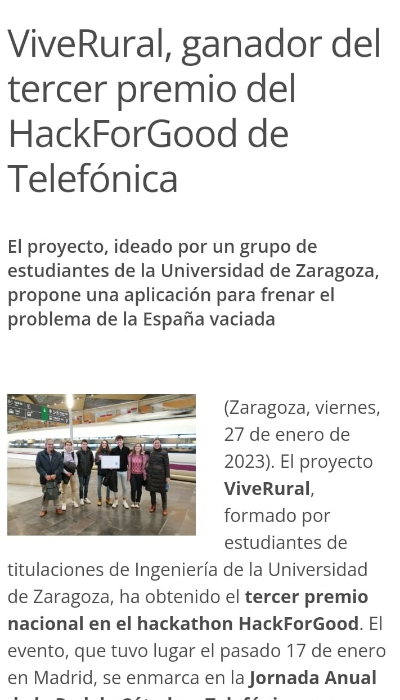
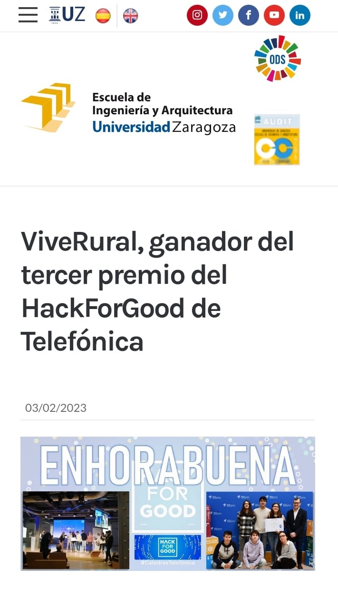
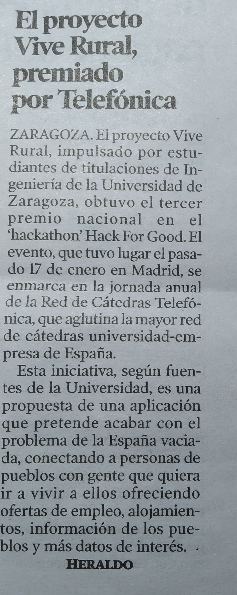

Vive Rural
Home
News
Download
About
Vive Rural
Muchos han sido los medios que han querido presentar los logros de Vive Rural.
elDiario.es
Eco de Teruel
Onda Cero
iUnizar

Escuela de Ingeniería Y Arquitectura

Heraldo de Aragón
